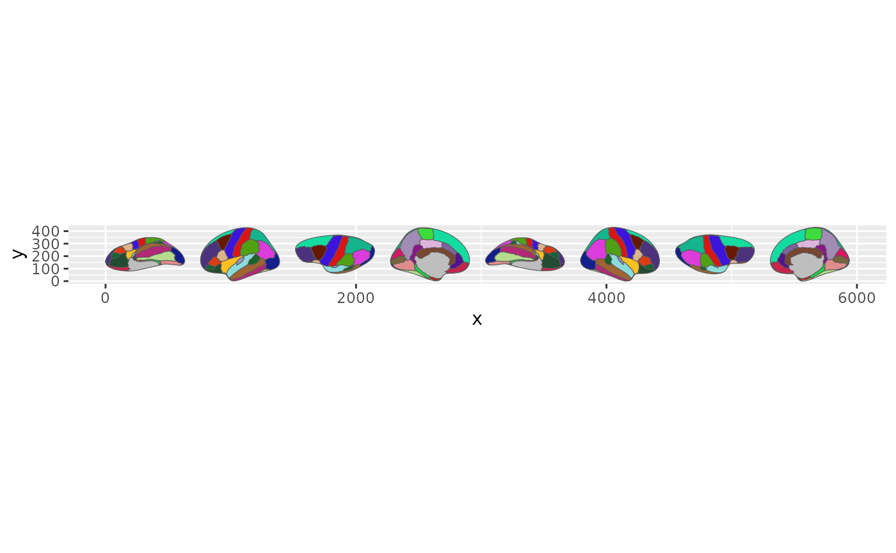
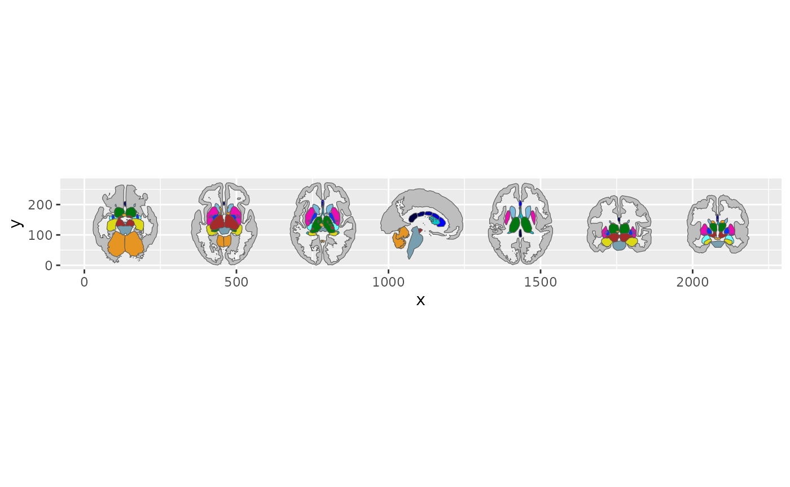
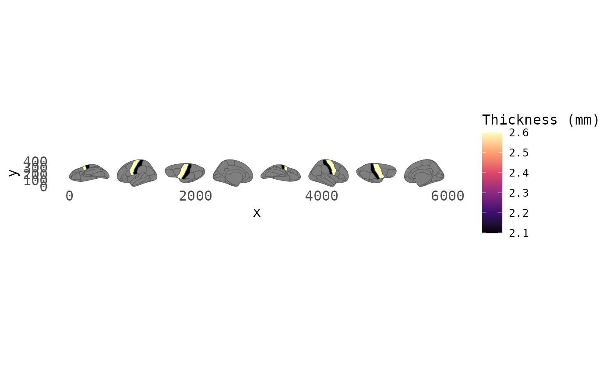

Neuroimaging analysis often ends with a table of regions and
p-values. The hard part is turning that table into a figure your
audience can actually read. ggsegverse exists to close that gap — one
library() call loads everything you need to go from
statistics to publication-ready brain figures in R.
library(ggsegverse)
#> ── ggsegverse ──────────────────────────────────────────────────── 0.0.1.9000 ──
#> ✔ ggseg.formats 0.0.4 ✔ ggseg.meshes 0.0.1
#> ✔ ggseg 2.2.1 ✔ ggplot2 4.0.3
#> ✔ ggseg3d 2.1.2What you get
ggsegverse attaches five packages, each handling a different piece of the visualization pipeline:
- ggseg — a ggplot2 geom for 2D brain region plots. If you can build a ggplot, you can build a brain figure.
-
ggseg3d — interactive 3D brain widgets built on
Three.js, with
snapshot_brain()for static images. -
ggseg.formats — the
brain_atlasandggseg_atlasdata structures that both ggseg and ggseg3d rely on, plus bundled atlases (Desikan-Killiany, FreeSurfer aseg, TRACULA, SUIT cerebellum) and FreeSurfer statistics readers. - ggseg.meshes — additional cortical surfaces (pial, white, midthickness, and more) and cerebellar meshes for 3D rendering.
-
ggplot2 — the grammar of graphics that ggseg builds
on, so
theme(),scale_fill_*(),labs()and friends are ready to use.
You do not need to remember which function lives where. Loading ggsegverse makes them all available.
ggsegverse is about plotting. If you want to build your own atlas from a parcellation, that is the job of ggseg.extra, which you install separately.
A first plot
The ecosystem ships four atlases out of the box: dk()
(Desikan-Killiany cortical parcellation), aseg()
(FreeSurfer subcortical segmentation), tracula() (white
matter tracts), and suit() (cerebellar lobules). These are
accessed as function calls that return atlas objects.
A cortical surface plot uses geom_brain():
ggplot() +
geom_brain(atlas = dk(), show.legend = FALSE)
The Desikan-Killiany atlas rendered with ggseg’s default settings.
The subcortical segmentation works the same way:
ggplot() +
geom_brain(atlas = aseg(), show.legend = FALSE)
FreeSurfer’s automatic subcortical segmentation atlas.
Mapping your own data
The real value is mapping your data onto brain regions. Say you have cortical thickness values for a subset of regions:
my_data <- data.frame(
region = c(
"precentral",
"postcentral",
"superiorfrontal",
"inferiorparietal"
),
thickness = c(2.6, 2.1, 2.8, 2.4)
)
ggplot() +
geom_brain(
data = my_data,
atlas = dk(),
mapping = aes(fill = thickness),
show.legend = TRUE
) +
scale_fill_viridis_c(option = "A") +
labs(fill = "Thickness (mm)") +
theme_brain()
Cortical thickness mapped onto Desikan-Killiany regions.
geom_brain() joins your data to the atlas by the
region column. Regions without data stay grey.
Interactive 3D views
For presentations or exploratory work, ggseg3d() gives
you a rotatable Three.js widget:
ggseg3d(atlas = dk())Add a translucent cortical surface for anatomical context around subcortical structures:
ggseg3d(atlas = aseg()) |>
add_glassbrain(opacity = 0.15) |>
pan_camera("right lateral")Finding and installing atlases
The bundled atlases cover the basics, but the ggsegverse r-universe hosts many more — Yeo networks, Schaefer parcellations, Glasser HCP-MMP, Harvard-Oxford, and others.
Browse what is available:
This queries the ggsegverse r-universe and returns a tibble of atlas packages with their versions and descriptions. Core packages and tools hosted there, like ggseg.extra, are left out. You can narrow the list with a pattern:
ggseg_atlas_repos("yeo")Installing an atlas
Once you have found what you need, install_ggseg_atlas()
handles the r-universe repository setup for you:
install_ggseg_atlas("ggsegYeo2011")After installation, the atlas is available like any other R package:
library(ggsegYeo2011)
ggplot() +
geom_brain(atlas = yeo7(), show.legend = FALSE)Checking what you have
installed_ggseg_atlases() lists the atlas packages you
have installed, with your local version next to the latest one on the
r-universe:
Keeping things current
ggsegverse_sitrep() gives you a quick diagnostic of the
core packages — what is installed, what version you are running, and
whether anything is out of date:
If updates are available, ggsegverse_update() prints the
exact pak::pak() call to run. It does not install anything
for you:
Name conflicts
When ggsegverse is attached, it lists any function that a core
package masks, or that masks one of its functions. Re-exports of the
same function across ecosystem packages, like dk(), are not
counted as conflicts. You can re-run the check at any time:
ggsegverse_conflicts()
#> No conflicts detected.If you prefer ambiguous calls to fail loudly, the conflicted package turns every conflict into an error until you choose a winner.
Where to go next
- ggseg documentation — full reference for 2D plotting, custom themes, and data joining
- ggseg3d documentation — 3D widget customization, camera control, and static snapshots
- ggseg.formats documentation — building and converting atlas objects
- ggseg.extra documentation — building your own atlases (not attached by ggsegverse; install it separately when you need it)